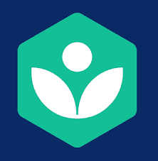
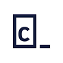

-

KHANACADEMY
Khan Academy is a non-profit educational organization created in 2008 by Salman Khan with the goal of creating a set of online tools that help educate students. The organization produces short lessons in the form of videos. Its website also includes supplementary practice exercises and materials for educators.
click here to go
-

CODEACADEMY
Codecademy is an online interactive platform that offers free coding classes in 12 different programming languages including Python, Java, JavaScript, Ruby, SQL, C++, and Sass, as well as markup languages HTML and CSS.
click here to go
-

CS 50 HARVARD EDx
This is CS50x, Harvard University's introduction to the intellectual enterprises of computer science and the art of programming for majors and non-majors alike, with or without prior programming experience. An entry-level course taught by David J. Malan, CS50x teaches students how to think algorithmically and solve problems efficiently. Topics include abstraction, algorithms, data structures, encapsulation, resource management, security, software engineering, and web development. Languages include C, Python, SQL, and JavaScript plus CSS and HTML. Problem sets inspired by real-world domains of biology, cryptography, finance, forensics, and gaming. The on-campus version of CS50x, CS50, is Harvard's largest course.
click here to go
-
Introduction to Programming MIT EDx
This course is the first of a two-course sequence: Introduction to Computer Science and Programming Using Python, and Introduction to Computational Thinking and Data Science. Together, they are designed to help people with no prior exposure to computer science or programming learn to think computationally and write programs to tackle useful problems. Some of the people taking the two courses will use them as a stepping stone to more advanced computer science courses, but for many it will be their first and last computer science courses. This run features lecture videos, lecture exercises, and problem sets using Python 3.5. Even if you previously took the course with Python 2.7, you will be able to easily transition to Python 3.5 in future courses, or enroll now to refresh your learning.
click here to go